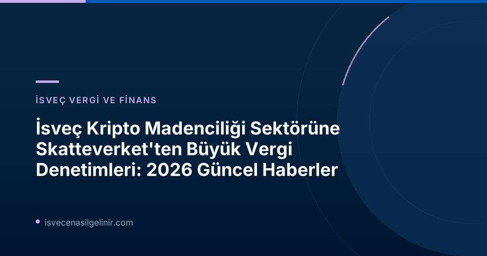

İsveç Vergi Dairesi Skatteverket'ten Kripto Madenciliği Sektörüne Sıkı Denetim
İsveç Vergi Dairesi (Skatteverket), ülkedeki kripto para madenciliği (mining) sektöründeki vergi kaçakçılığı ve haksız vergi avantajı elde etme girişimlerine karşı mücadelesini kararlılıkla sürdürüyor. Kurum, özellikle bu alandaki şirketlerin vergi sistemine yönelik potansiyel saldırları engellemek amacıyla kapsamlı denetimler gerçekleştiriyor.
Daha önceki yıllarda yapılan denetimlerde de benzer sorunlar tespit edilmişti. Skatteverket'in 2020-2023 yılları arasında gerçekleştirdiği kontrollerde, 18 şirketin toplamda yaklaşık 1 milyar İsveç Kronu (SEK) değerinde ek vergiye tabi tutulduğu açıklanmıştı. Bu yeni açıklama, sorunun hala devam ettiğini ve Skatteverket'in denetim faaliyetlerini yoğunlaştırdığını gösteriyor.
Milyarlarca Kronluk Vergi Kaçakçılığı ve Haksız Kazançlar Ortaya Çıkarıldı
Skatteverket'in 2024-2026 yılları arasında gerçekleştirdiği en son denetimlerde, dokuz şirketin mercek altına alındığı ve bu şirketler hakkında toplamda 529 milyon İsveç Kronu'nun üzerinde ek vergi tarhiyatı yapıldığı belirtildi. Bu denetimler sonucunda ortaya çıkan rakamlar, sektördeki vergi uyumsuzluğunun büyüklüğünü gözler önüne seriyor. Bu miktarın önemli bir kısmı, katma değer vergisi (KDV) düzeltmelerinden ve vergi cezalarından oluşmaktadır.
2024-2026 Kripto Madenciliği Vergi Denetimi Bulguları
| Denetim Dönemi | Hedeflenen Şirket Sayısı | Toplam Ek Vergi Tarhiyatı | Vergi Cezaları (Skattetillägg) | KDV (Moms) Düzeltmeleri |
|---|---|---|---|---|
| 2024-2026 | 9 | 529 Milyon SEK | 57 Milyon SEK | 471 Milyon SEK |
| 2020-2023 | 18 | Yaklaşık 1 Milyar SEK | - | - |
Bu veriler, Skatteverket'in kripto madenciliği sektöründeki denetimlerinin devamlılığını ve ortaya çıkan yasa dışı faaliyetlerin mali boyutunu net bir şekilde ortaya koymaktadır. Daha detaylı vergi ve yasal uyum bilgileri için sverigemedborgarskapsprov.com adresini ziyaret edebilirsiniz.
Sektördeki Sorunlar ve Vergi Avantajı Elde Etme Mekanizmaları
Skatteverket İstihbarat Şefi Patrik Lillqvist, denetlenen şirketlerin kripto para madenciliği faaliyetlerini sıklıkla gizlemek için özel düzenlemeler kullandığını belirtiyor. Bu şirketlerin amacı, aslında hak etmedikleri vergi avantajları elde etmektir. Lillqvist, denetimlerin bu kadar karmaşık olmasının başlıca nedenlerinden birinin, madencilik ekipmanını kimin kullandığını ve veri merkezlerinde hangi tür faaliyetlerin yürütüldüğünü tespit etmedeki zorluklar olduğunu vurguluyor.
Özellikle Katma Değer Vergisi (Moms) açısından, faaliyetin nasıl sınıflandırılacağı merkezi bir sorundur. Kripto para madenciliği, çoğu durumda Katma Değer Vergisi'nin uygulama alanının dışındadır çünkü işlemde net bir karşı taraf bulunmadığından giriş KDV'si indirimi yapılamaz. Ancak bazı şirketler, faaliyetlerini KDV'ye tabi olarak tanımlamakta; örneğin, bilgisayar gücü veya diğer KDV'ye tabi hizmetler sağladıklarını iddia etmektedirler. Bu durum, yanlış beyanlar ve haksız KDV iadeleri yoluyla vergi gelirlerinin ülke dışına çıkmasına neden olabilmektedir.
Skatteverket'in Zorlu Mücadelesi ve Araştırmaların Karmaşıklığı
Patrik Lillqvist, düzenbaz aktörler için faaliyetlerini yanlış sınıflandırmaya teşvik eden net nedenler olduğunu belirtiyor. Kripto madenciliği faaliyetlerini gizleyerek, KDV'ye tabi bir iş yaptığını iddia eden şirketler, yanlış ödemeler, ödenmemiş çıkış KDV'si ve beyan edilmemiş kripto varlıkları aracılığıyla ülke vergi gelirlerinin kaybolmasına neden olabiliyorlar.
Kripto Madenciliği Sektöründeki Vergi İhlallerinin Sonuçları
Vergi kaybının yanı sıra, madencilik veri merkezlerinin kara para aklama mevzuatına tabi olmaması da önemli risklerden biridir. Bu durum, sektördeki yasa dışı faaliyetlerin daha geniş finansal riskler taşıdığını göstermektedir. Skatteverket, bu tür ihlallerle mücadele ederek hem adil bir vergi sistemi oluşturmayı hem de ülkenin finansal güvenliğini korumayı hedeflemektedir.
Ne Yapmalısınız? Yasalara Uyumun Önemi
İsveç'te kripto madenciliği veya ilgili faaliyetler yürüten şirketler için yasalara tam uyum büyük önem taşımaktadır. Faaliyetlerin doğru bir şekilde sınıflandırılması, vergi beyanlarının şeffaf ve eksiksiz yapılması, olası denetimlerde büyük sorunlarla karşılaşılmasının önüne geçecektir. Şirketlerin, alanında uzman mali müşavirlerden ve hukukçulardan destek alarak vergi yükümlülüklerini eksiksiz yerine getirmeleri kritik bir adımdır.
Referanslar:
- Skatteverket Resmi Duyurusu: Fortsatt stora upptaxeringar inom miningsektorn
- İsveç Vatandaşlık Testi için daha fazla bilgi: sverigemedborgarskapsprov.com
İsveç'te Vergi ve Göçmenlik Süreçleri Hakkında Bilgi Edinin
İsveç'teki vergi düzenlemeleri, göçmenlik süreçleri ve vatandaşlık testleri hakkında en güncel ve kapsamlı bilgilere ulaşmak için kaynaklarımızı inceleyin.